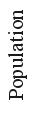

|  | ||
Overview:
The SIR models the flows of people between three states: susceptible (S), infected (I), and resistant (R). Each of those variables represents the number of people in those groups. The parameters alpha and beta partially control how fast people move from being susceptible to infected (alpha), and from infected to resistant (beta).
The SIR model is used where individuals infect each other directly (rather than through a disease vector such as a mosquito). An individual who recovers from the illness is also modeled to have perfect immunity to the disease thereafter. Contact between people is also modeled to be random.
The rate that people become infected is proportional to the number of people who are infected, and the number of people who are susceptible. If there are lots of people infected, the chances of a susceptible coming into contact with someone who is infected is high. Likewise, if there are very few people who are susceptible, the chances of a susceptible coming into contact with an infected is lower (since most of the contact would be between the non-susceptible people--either infected or resistant).
Instructions:
The boxes on the right side of the page control the parameters of the model. The page should load with some parameters already in the box. Click "submit" to run the model. The parameters can all be modified and the model re-run. The parameters are
| Beta | The parameter controlling how often a susceptible-infected contact results in a new infection. |
| Gamma | The rate an infected recovers and moves into the resistant phase. |
| Initial susceptible | The number of susceptible individuals at the beginning of the model run. |
| Initial infected | The number of infected individuals at the beginning of the model run. |
| Initial recovered | The number of recovered individuals at the beginning of the model run. |
| Iterations | Controls how long the model will run (each iteration is .01 units of time). |
Details:
This is an ordinary differential equation model, described by the following equation: